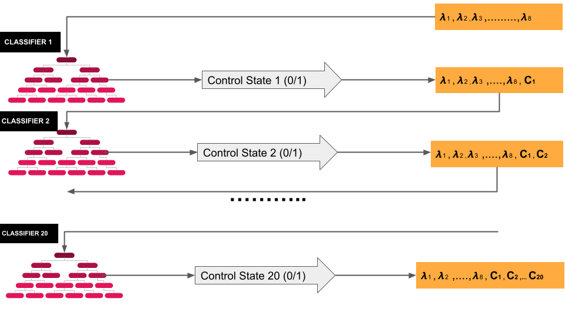

ML-based inverse control for Software Defined Optical Networks
A multi-label classification model that predicts photonic switch control configurations from optical signal wavelengths, developed during a research internship to simplify real-time control of Software Defined Optical Network infrastructure using XGBoost and classifier chains.
This project was published as a peer-reviewed paper in the IEEE Xplore digital library. Read the full paper on IEEE Xplore →
This project was completed during a research laboratory internship focused on Software Defined Optical Networks (SDON), an emerging paradigm that combines optical fiber communication infrastructure with programmable network control planes. The goal was to develop a machine learning model capable of predicting control switch states in photonic switching systems based on the wavelengths of incoming optical signals.
Photonic switches dynamically route light signals through fiber optic networks. Determining the correct control configuration for these switches is complex: the number of possible wavelength combinations and corresponding switch states grows rapidly with network scale, making real-time rule-based control difficult to maintain.
I developed a multi-label classification model using XGBoost and classifier chains that acts as an inverse controller, learning the mapping from optical signal wavelengths to the required switch states from system data, rather than computing it analytically. This approach significantly simplifies the control problem and demonstrates how ML can replace complex optimization algorithms in optical network management.
Traditional controllers compute switch states from system rules. This model inverts that: given the wavelengths of incoming signals, it directly predicts which switch states are required, removing the need for explicit rule engineering.
Photonic switching systems require precise, simultaneous control of multiple switch parameters to correctly route light signals through an optical network. Traditional approaches rely on rule-based configurations, manual parameter tuning or complex optimization algorithms, all of which become increasingly difficult to manage as the number of wavelengths and switch states scales up.
The core problem addressed in this project is formally a multi-label classification task: given 8 input features representing incoming wavelength combinations, predict the binary state of 20 control switches simultaneously, where switch states are not independent of one another.
The core modeling challenge is that the 20 binary switch states are not independent of each other, one switch's state may constrain or influence the state of others. Standard binary relevance methods (training one classifier per label independently) ignore these dependencies and underperform on correlated outputs.
The Classifier Chain architecture addresses this directly by arranging 20 binary classifiers sequentially. Each classifier predicts one switch state while using the predictions of all previous classifiers as additional input features. This allows the model to progressively build up dependency information across the output space.
Each classifier in the chain uses XGBoost as the base estimator, a gradient boosting algorithm that provides high accuracy, efficient training and built-in regularization for robustness against noisy data from mixed simulation and real-system sources.

Fig. 1: Classifier chain showing sequential dependency propagation across 20 binary switch outputs
| Parameter | Description | Value |
|---|---|---|
| n_estimators | Number of boosting trees | 140 |
| max_depth | Maximum tree depth | 5 |
| reg_lambda | L2 regularization term | 1 |
| Metric | Description | Score |
|---|---|---|
| Hamming Loss | Incorrect label fraction | 0.040 |
| Precision | Predicted positive accuracy | 95% |
| Recall | Actual positive coverage | 96% |
| Macro F1 | Balanced precision/recall | 95.6% |
The system successfully learned the relationship between optical signal wavelengths and photonic switch control states, achieving over 95% precision and recall across 20 simultaneous binary outputs. The classifier chain architecture proved effective at capturing inter-switch dependencies that standard independent multi-label methods fail to model.
Beyond the predictive accuracy, the project demonstrates a broader principle that the ML-based inverse models can replace complex, hand-engineered control algorithms in high-speed communication infrastructure, making network control more scalable, adaptive and maintainable as optical network topologies grow. The work was published as a peer-reviewed paper in the IEEE Xplore digital library.